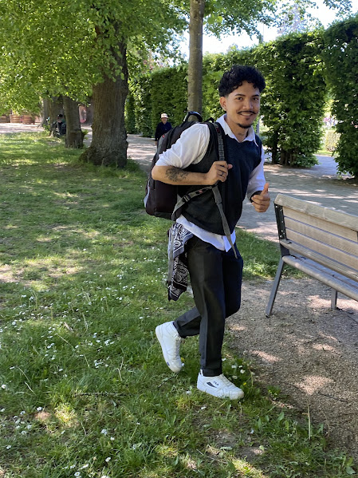

José Ismael Flores Villegas | WDD 130

Hello! My name is José Ismael Flores Villegas, and I am from San Salvador, El Salvador. I am 24 years old and was born in September. I have a very large family, and I am the oldest of eight siblings, which means I have seven younger brothers and sisters.
I enjoy everything related to music, especially the violin. I also enjoy discovering new places and learning about different countries and cultures. I am currently beginning my journey in the WDD 130 course because I want to gain more confidence and knowledge in this area. I have always enjoyed researching new topics and learning new things, so I am excited to continue exploring and developing new skills throughout this course.